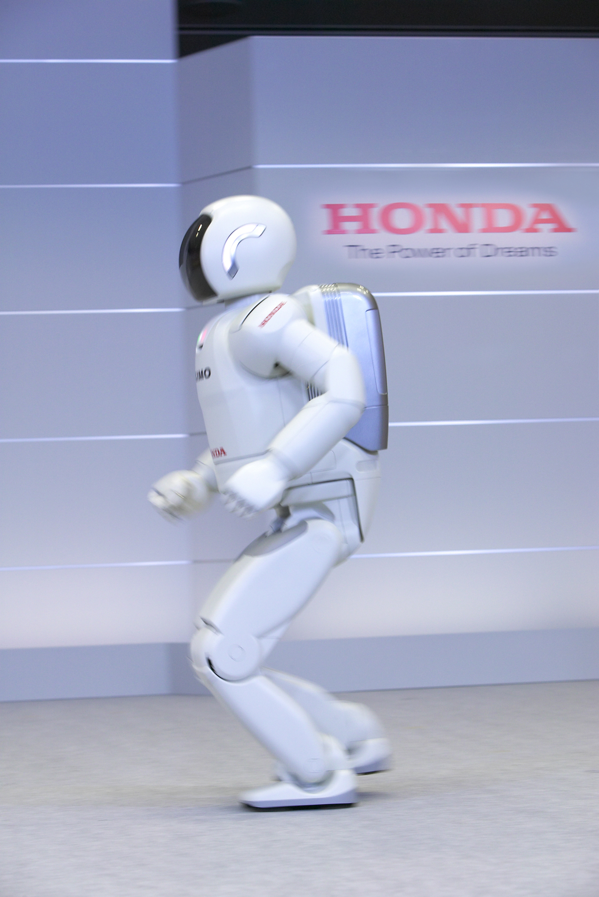
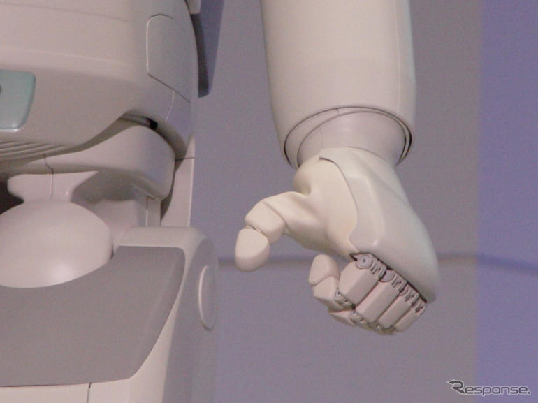
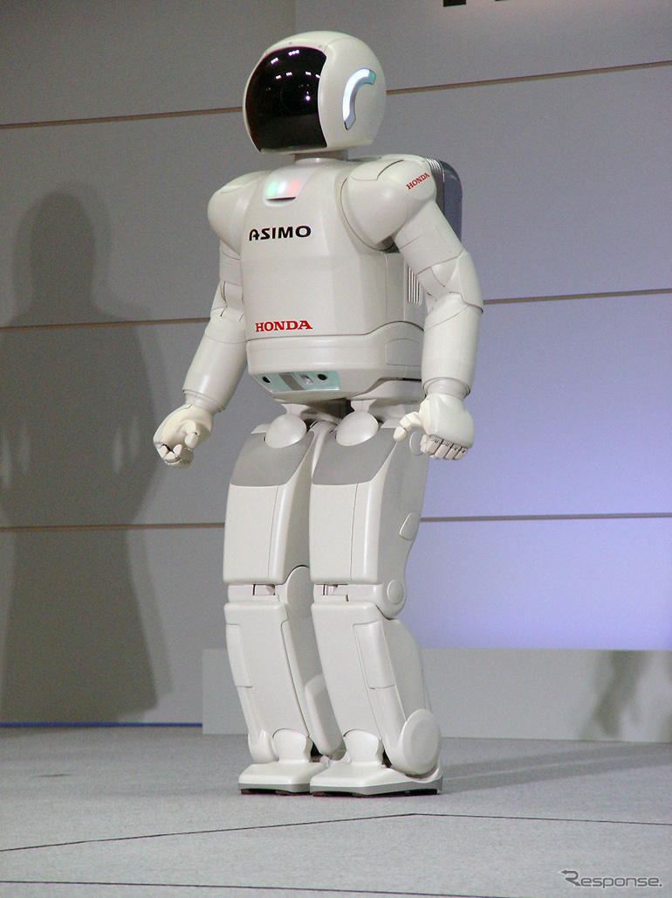
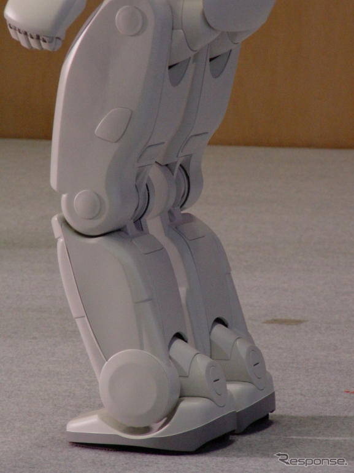
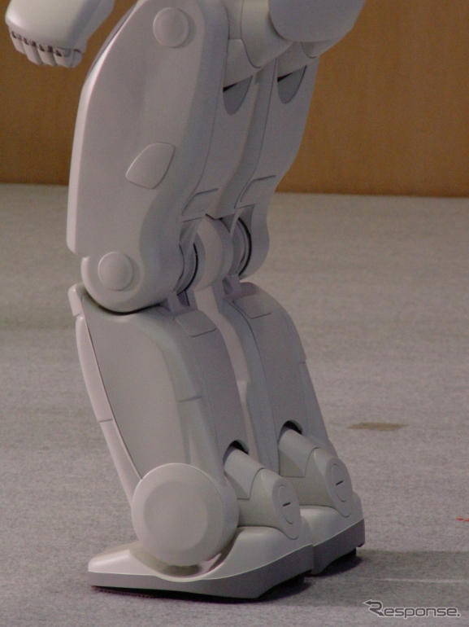

ASIMO
| 2000 | 2001 | 2002 | 2003 | 2004 | 2005 | 2007 | 2011 |
|---|
2004 (Version 2)

On December 15th, 2004, Honda announced ASIMO's second major version update. This generation brings a total overhaul of every system. New control theory, upgraded hardware, and useful interactive functions.


Hardware
This upgrade has come with a slight increase in height and weight, now at 130cm and 54kg respectively. As well as an increase to 34 degrees of freedom. But visually, a lot more has changed. The outer shell is a lot more rounded off, the backpack is smaller and slimmer, and there are some new lights on both sides of the head.
Notably, the legs are much thicker than ASIMO 2002 and look closer to ASIMO R's (2003) legs. This is due to the fact that this is the first time ASIMO can run. At 3km/h, ASIMO is airborne for 0.05 seconds. Although it doesn't sound like much, it technically qualifies as running. Many hardware upgrades made this possible. New high powered motors were developed, along with a more rigid and lighter weight leg mechanism. Also, an additional degree of freedom at the waist enables hip rotation, allowing for ASIMO's upper body to rotate in the opposite direction of the forward leg swing, canceling out rotational forces. Walking speed has also benefited from these improvements, increasing to 2.5km/h.
Previously, all fingers were driven by a single motor, now the thumb has independent actuation enabling the hand to grasp more complex objects. The other fingers, were upgraded as well, the total gripping force is now up to 500kg per hand. There are now 2 DOF and a new force sensor installed in the wrist, making it capable determining the weight of objects, responsive handshaking, and step correction when pushed or pulled by the hand. Moving up the arm, the elbow is now double jointed, similar to ASIMO R (2003).

Now using an infrared camera, it's able to correct it's position while walking, regardless of the lighting conditions. Adding to the sensor suite are ultrasonic sensors located around the waist, more specifically, aiming behind and to the side. This gives it better awareness and obstacle avoidance.
Some minor upgrades to the head include replacing the stereo cameras with high dynamic range ones, and adding a degree of freedom allowing ASIMO to tilt its head.
Lastly, battery life has been increased to 1 hour.
Software
A completely new posture control theory was needed to be able to run. The biggest issue when trying to increase running speed was spin slip. Spin slip is when one leg is kicking forward and the other is leaving the ground, losing preasure. Using waist rotation and arm swing counter acts those forces and controls spin slip. Other development challenges were jumping accuracy and absorbing landing impact.
Equipped with greater decision planning, upgrades to the internal communication pathways were necessary for responsive behavior. With better sensor fusing, ASIMO is now able to self correct its position. A problem with previous models is that its position would drift over time while walking, meaning that where it thought it was different than where it actually was.
Adding to theses improvements, you can now tell ASIMO where to go, and it will navitate there autonomously based on a prestored map. If there are objects obstructing its path, it will try and reroute.
Variations
On December 15th, 2004, during ASIMO's first press demonstration, two different variations made their debut. The first, we already discussed and is the official version, but the second actually came out on stage first, with a different set of legs.
 

The legs on this variation are, at least from the exterior, the exact same legs as ASIMO R (2003). To my knowledge, this was the only time it was seen. I am unaware of why they chose to do this, but we can speculate. Assuming that these legs were used throughout the development stage, having hardware capable of testing the new control software before the new legs were finished, it's possible there was a feature that they wanted to show off that wasn't fully reliable on the new legs, or they needed two ASIMOs on stage but only had this prototype available at the time, or something completely different. Whatever the reason, it's still interesting that two different variations of the same ASIMO model were onstage at the same time.